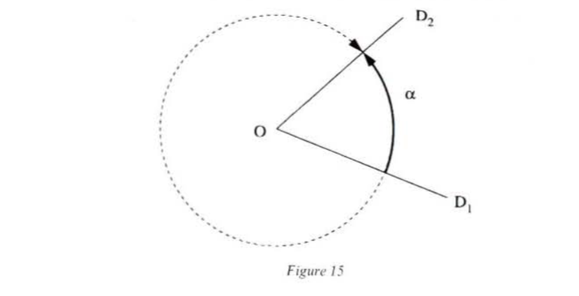

Gilles Châtelet
Chapter 1: The Enchantment of the Virtual
Chapter 2: The Screen, the Spectrum and the Pendulum
Chapter 3: The Force of Ambiguity
Chapter 4: Grassmann's Capture of the Extension
Chapter 5: Electrogeometric Space
Naturphilosophie has had a bad press. It seems that historians of philosophy have agreed to hold onto the political or aesthetic part of the oeuvres of Fichte, Schelling, and Hegel, but have given up on the idea of ‘saving’ German idealism’s philosophies of nature. In Germany, however, the beginning of the nineteenth century was a period of lengthy exchanges between scientists and philosophers. Schelling had a ‘passion for the positive’ and Hegel saw no insuperable enemy to speculation in positivity. Certain works in the United States, Germany, and England stress this aspect of the philosophy of nature and the importance that should be accorded to metaphysics as the ‘matrix of ideas’; these analyses, however, generally remain at the level of sociology. German idealism nevertheless attempted to rethink the articulation between the exact sciences and the philosophical speculation, refusing to limit itself to the problematic of the philosophy of knowledge and situating the horizon of the thinkable well beyond the object’s conditions of possibilities.
Considered the golden age of the great philosophical systems, that of the emergence of the notion of structure, the beginning of the nineteenth century is also perhaps the moment when the centre changes status: the infinity point of the classical age gives way to the neutral indifference points which mark degrees of equilibrium and from which polarities continuously spring.
We know how much mathematicians and philosophers of the classical age had banked on the homogeneity that unfolds a horizon. Analytical philosophers in particular knew how to make use of it: they had succeeded in taming the ‘indeterminate forms’ of the type and , which crush the crude finite differences (by formulae that amount to the type and reveal themselves formidable machines for producing ‘deaf’ (irrational) numbers.1 The geometric infinite was also properly tamed by Desargues’ perspective, whose vanishing points put the horizon within reach as it were. But if, for the analytical philosopher or geometer, the quantitative infinite and the vanishing points were no more than inoffensive singularities, if not actually domesticated, the menacing singular is that which reveals — often cruelly — the naivete of the ‘on the one hand, on the other hand’ on which the understanding of Mr. Prudhomme likes to feed. The latter begins to note with a certain dread that functional correspondences are never self-evident, that they had to be removed from situations where the rules of selection that seemed to assert themselves ‘naturally’ and therefore to legitimate canonical protocols of discernment collapse. Magnetic and electrical polarities and the ambiguous choice that guides the indexation of the roots of an equation reveal this scandal: the ‘canonical’ was decided ‘behind the back’ of the geometer or philosopher, with a gesture made without his knowing.
Consider the diagram of the magnet: the difference between the North pole and the South pole is clear at the points and but becomes elusive at the point (see fig. 1).
The points of the North branch can be superposed on those of the South branch and a functional arrow immediately emerges to compensate for this given difference, by inducing a correspondence between a circuit of the North branch and a circuit of the South branch. At the point , this ‘canonical’ correspondence vanishes. seems to be the point where the two functional correspondences separate and join.
is a ramification point where the two parametrages linked to the North branch and the South branch offer themselves, thereby making several functional grasps possible. The necessity of opting for this or that determination, which always accompanies the encountering of an indifference centre, troubles geometers: it becomes obvious that these points promise a much headier (and much more difficult to control!) multiplication of correspondence than the ‘indeterminate forms’.
The centre, as an infinity point, no doubt made it possible to control the quantitative difference that separate finished beings, but did so by subjugating the particularities externally. The indifference centre positions us at the heart of individuation: the instability device which detects it makes it possible to envelop a whole fascia of virtualities without mixing them up. Symmetry is rediscovered as a producer of differences.
The existence of such an indifference centre in electrical and magnetic diagrams fascinates physicists and speculative philosophers. As the North and South poles of a magnet seem to proceed from a neutral point, it is tempting to think that the given differences cannot initiate the processes of individuation. Their overbearing heterogeneity produces no dimension: new forms only arise when a kind of congruence sketches itself out, and this congruence seems indeed associated with the inflexions of the hand that draws a curve, with the ambiguity of the choice of the roots of an equation, with these strange points where the charges balance one another out, with those places where the understanding falters. At the indifference centers the highest uncertainty is achieved, which therefore requires the most irreversible decision.
These centres spare neither the scientist nor the philosopher and the tribute they lay claim to is consistent with what they overcome and dominate: opposed poles. An indifference centre can always be defined as the principal hinge of a compensation device for received positivity. The ambiguity produced by these devices throws us into perplexity, and it is precisely that triumph over an opposition by proclaiming it as the scar of an ‘around’ which always accompanies the birth of a pair. For it is around a centre that such arrangements that so insistently solicit our interventions pivot. They manage to grasp everything enveloped and contaminated by the emergence of a Two. This Two, here, is not an extensive cardinal number, but a couple, and therefore obliges the sketching of an order in no way present in space: in short, orientation.2
Thanks to these arrangements, the physicist, with his axis/loop duality, the geometer, with his orientation, the philosopher, with his dialectic, can, at last, capture what language had recognized when it detected that that which gives itself simply ‘side by side’, like the ambe3, must have arisen together, and that it is the ambiguity of a proposition that invites the exploration of a context. What ‘comes out together’ is not one thing and another thing, the latter beside the former; that would be no more than the platitude of the ‘side by side’ on an already arranged background. The choice of an orientation indeed shows that a Two inexorably knits itself with an envelopment. Consider the diagram below (see fig. 2), which intersects a way of enveloping with a way of transiting. It is the journey of the moving body, articulated in the environment, that makes the creation of the lateral possible by permitting the designation of a ‘left side’ and a ‘right side’.
The opposites are indeed surpassed, for the gesture that brought them into existence has been cut out, but this cutting out is paid for by the intrusion of another dimension, which permits us to see that the arrow can be turned round into in two ways (see fig. 3) and that the overcoming of an opposition is always paid for with the emergence of a singularity.
We have seen how the implicit and coposed horizon managed a controlled allusion to the coalition of degrees, to acceleration. The ambiguity and allusive arrangements which provoke it torment the understanding until it is ready to burst: this is the ‘pound of flesh’ that must be taken to penetrate further into the unarticulated. That is why Kant’s article ‘On the Concept of Negative Quantities’ marked an epoch by revealing the cruelty of the devices that Schelling would later call ‘exponents’: they disdain the trivial challenge of logical contradictions (which immediately invalidate any assertion) to tackle the oppositions with balances where a point commands the gyration that rules them.
We are touching here on the tender spot of the philosophy of nature: that of the intuition of the degrees of articulation, those where Being overhangs, where quantitative differences and ‘canonical’ choices of parametrage vanish. Ambiguity accompanies these critical thresholds, for it alone bestows a dynamic positivity on the separation. Two grossly unequal quantities fill us with the certainty of the established dualisms. Pyrrhic victory! One does not overcome an antagonism by playing on two terms, but by arousing the secret affinity that links them, by sliding oneself into the motion by which positivity hollows out a thickness for itself. The simple datum of a functional grasp
assumes that a sharp separation between a position and what has made it possible has been achieved too quickly.4 An established correspondence of the type of (1) is always born of a tear. Well in advance of the function, the exponent captures a power of operation without ‘flattening’. To expose is not to explain, but to contrive a niche-continuum to the singular by enveloping all the virtual determinations proceeding from a problem (this is the case with ‘multiform functions’ or with Galois’ bodies which are attracted to an equation).5
In the notation , 2 functions neither a second nor as 1+1, but at last allows a ‘magnitude to interact with itself …’ Wherever exponents appear, an ambiguity always intervenes; this is the price to pay for tying product and productivity together and for giving from memory. This memory is not placed in the form; it is only awakened by the intuition of the intuition: the ambiguity. The geometric intuition of geometry considered as Raumlehre always appeals to certainty, to the reassuring inertia of a spatial tranquilly wrapped around things, for help. This intuition of an intuition — of which the young Hegel dreamed — undertakes the dismantling of falsely obvious appearances and invites us to cross the thresholds of maximal ambiguity to remobilize already established knowledge in the example of the measurement of angles, we shall see that it is precisely the existence of two symmetrical paths that show that the intuition has to pull itself up into the space of the paths to associate a number with a flat angle.
If I do not give two solutions to the equation (equals in ‘absolute value’), the magnitude is not mobilized; it collapses in on itself and the productivity is exhausted in the product. In the same way, Grassmann’s product will show that if it did not fundamentally rest on an ambiguity of a choice (in order to increase the thickness of the naïve intuition’s rectangle to two pages), it would miss the capture of the extension, short of revealing the neutral centre where everything is going to be decided (see chapter IV). Through the ambiguity of the root-exponent, what was posited in the unity of the act — apply a rule — unfolds in the continuity of a gesture. The available positivity, ingenuously palpable, cracks to envelope a spectrum of solutions, allowing the formula: . The Greeks had a presentiment of this formula: they knew that ‘the straight line has the power of its square’.6 Opposition, tearing apart, impossibility: these can be the symptoms of a degree of intuition to be crossed, but the new dimension does not arise ‘because’ of the opposition of the ‘intuitive’ clichés, but they do not ‘lead’ me to the solution: the articulation is a leap, which is neither deductive exhaustion nor ‘abstract’ induction from common features.
For the indifference centre, the exponent always presents itself as a degree of Being. In it, product and productivity are indistinguishable and the forms seem to have triumphed over the ambiguity. The exponent-root offers its memory and its depth. Its conquest is part of the ‘presentiment’ of which Grassmann speaks, which acts well before the spreading out of all moments of the new truth.
As last the event of separation becomes conceivable. Too often interpreted as a rupture, and quickly engulfed in the fracas of quantitative disparities, this separation of forms is now played out in the infinitesimal step backwards revealed by the exponent: the higher the symmetry, the more irrevocable the decision. These are not the least paradoxes of these strange paradises, where forms seem to originate without injury from themselves. In understanding the negative as a relation of situation, Kant opened the doors to new paradises that scientists and metaphysicians would no longer wish to ignore. We will see how exponents solicit the intuition in the most acute manner and how they succeed in overturning the classical pact sealed between geometry and algebra, by tying the images of the first (‘figures’) to the literality of the second (the series of formulae and of calculations of magnitude).
As an allusive arrangement, the exponent and the balance concentrate all their fire power in a point or an axis, and it is in such points or axes that the gesture that gives birth to the polarities arises. But the more the cutout seems ‘natural’ afterwards, the more it has made us wait. It was by tapping deeper into the new homogeneity was found: such is the dialectic’s austere lesson.
Orientation has to dig very deep, for it is only at the beginning of the nineteenth century that the attack of the literal erupts. The negative, as inserted and situated, is recognized as a force at the same time freeing algebra from successivity and geometry from spatial cliché; it at last smashes the boundary that previously separated spatial intuition and deductive understanding and strictly defined the domains of algebra (the science of magnitudes) and geometry (the science of figures). Leibniz was not aware of this divorce and had sensed the possibility of calculating on the ‘relations of situations’ (analysis ditus), as a letter to Christian Huygens bears witness:
I have discovered certain elements of a new characteristic which is entirely different from algebra and which will have great advantages in representing to the mind, exactly and in a way faithful to its nature, even without figures, everything which depends on imagination. Algebra is the characteristic for undetermined numbers or magnitudes only, but it does not express situation, angles and motion directly. Hence it is often difficult to analyse the properties of a figure by calculation.
Or again:
I believe that by this method one could treat mechanics almost like geometry, and one could even test the qualities of materials, because this ordinarily depends on certain figures in the sensible parts. Finally, I have no hope that we can get very far in physics until we have found some method of abridgement to lighten its burden of imagination.7
Historians of science have probably not given enough though to this surprising fact: the identification of imaginary numbers with the plane appears in the mathematical literature only at the beginning of the nineteenth century. The synthesis of geometric gestures effective in the two-dimensional continuum and calculations implying ‘impossible quantities’ therefore took nearly three centuries to complete! The mathematicians of the eighteenth century had however already tackled some problems that were, from a technical point of view, extremely elaborate; but by considering as subsidiary or quite simply as self-evident, these gestures of orientation, of indexation and envelopment that begin the revolutions of Galois, Faraday, Mobius, Grassmann and many others, by flinging these gestures beyond its only horizon — or rather from under its feet — classical mathematics condemned algebra and geometry to maintaining a curious relationship of reciprocal predation: algebra is executed by avoiding the pitfalls of figures and geometry, in return, guarantees the ‘real’, tangible character of algebraic calculations, which, without it, would be pure ‘abstractions’. Geometry makes them ‘leap out at you’; the ‘real’ objects of our space and their relations of distance embody a self-evidence that compels conviction and thus remain the agents of a mathematical truth akin to a simple faith; this faith also nourished itself on the ‘real’ existence of kinematics and dynamics, which indeed showed that algebraic forms were not ‘pure visions of the mind’ and that they controlled the laws of nature.
With Argand-Wessel’s complex plane, then Hamilton’s quaternions, Grassmann’s algebra and the works of Mobius, a revolution is brought about: one at last ‘sees’ the multiplication of imaginaries (which then become ‘allegedly imaginaries’), angles and vectors. The multiplication of magnitudes required only dilations; henceforth, a geometric transformation in two dimensions — a rotation — accompanies the mysterious symbol .
The geometric intuition is therefore no longer only the kind of ocular inspection which ascertained the agreement of mathematical calculations with measurements of real objects: it is henceforth more the possibility of grasping by diagram the exposition of the conquest of the space, consecrating thus the emergence of a physio-geometric continuum in two dimensions as far removed from Euclid’s plane as it is from the abstract vectoral space of our formalists.
But this mobilization of space also causes physics and, above all, the whole of the electrophilosophy of the beginning of the century to totter; in understanding that a magnetic bar concentrates no boreal or austral fluid around its poles, in conceiving of it as a loop splitting space into two faces and as an axis capable of producing a third dimension, Ampere and Faraday invent a stratagem that is sufficiently powerful to inspire and give definite form to the whole electromagnetic vision from which Maxwell and Einstein drew their inspiration.
To introduce the concept of negative magnitude of quantity, Kant observes:
Two things are opposed to each other if one thing cancels out that which is positive in the other. Opposition can be logical or real. Hitherto attention has been centered on logical opposition. This consists in affirming and denying something of the same subject. This logical connection is without consequence .[nihhil negativum repraesentabile], as the principle of contradiction states.8
The simple logical contradiction is not ‘real’; it solicits no intuition, produces no ‘consequence’ and leads thought into an immediate impasse. The ‘real’ opposition which ‘is such that two predicates of a subject are opposed, but without contradiction’ does imply destruction, but this destruction is thinkable (‘the consequence is some thing’) and does not brutally discourage all philosophical effort.
Kant then gives a few examples which show that the opposition always envelops itself (at least in thought) with an equilibrium that grasps the positivity of the destruction of a thing or of a motion.
The driving force of a body tending towards a certain point and a similar effort of this body to move in the opposite direction are not contradictory and are possible as predicates in a single body at the same time. The consequence of this is the rest which is something [repraesentabile]. But we have to do with a genuine opposition: one tendency suppresses the real effect of the other; the two tendencies are real predicates of a single body and refer to it at the same time. The consequence of it is equally Nothing, but in a different sense from contradiction [nihil privativum repraesentabile].9
There is the example of the accountant’s balance sheet: I can create a table with the passive inscribed on the right and active on the left. I will thus have succeeded in representing a compensation, in understanding a zero capital as the consequence of two activities that are positive in themselves (credits to be recovered or debts to be paid back). The third example, that of the ship that goes from Portugal to Brazil, is probably the most illuminating: I can mark the distances travelled by an east wind with a sign ‘’ and those travelled by a west wind ‘’. We see that the signs ‘’ and ‘’ serve to mark the opposition of two magnitudes which, put together, suppress one another reciprocally.
Kant’s examples are not picked at random: they allude to a device (‘real’ or ‘ideal’) suggesting a cancelling out and a balancing, a means of linking two predicates that are positive by themselves, ‘but in such a manner that, in the liaison, the consequences suppress one another reciprocally in the same subject’. Thus, in these three examples, to cancel out is not to ‘make a vacuum’, it is not to prohibit all intuition, in the same way that a logical contradiction, impatient to ‘have done’ with talk, would tax it with absurdity, to swallow it up with no possibility of redemption.
In the case of real opposition, the sign ‘’ indicates a certain capacity to get round that which asserts itself as purely given and self-evident, to roll back an unrolling, to escape the inertia of a pure expansion. This capacity, combining mobility and orientation, starts a turning motion in the mind which liberates it from taking into account what is simply posited there: a force embedded in matter, a sum of money, a distance travelled. The intuition thus escapes from the kind of subjugating stupidity of the iteration of the sum, from the tyranny of the extensive which imposes itself on me with the heavy obviousness of lids, or discharges.
Kant adds:
A magnitude is negative in relation to another magnitude in so far as it can only be joined together with it by an opposition, that is to say, in so far as the one makes a magnitude equal to itself disappear in the other.10
A negative magnitude therefore rises up with the emergence of a singular joining together, which is by no means self-evident but can be brough about by a suitable effort; positioned on the bridge of the ship, I can simply allow myself to be led, I can accept its eastward progress. But I can always cancel this progress virtually by thought, by imagining a contrary wind. We see what is at stake: the allusion to a moving body which could move in the opposite direction does not deny the existence of this moving body, but initiates a thought-loop capable of controlling the spreading of an extension (here, abolishing a distance that has already been travelled). Zero is therefore not ‘nothing’, since it ratifies a subject’s capacity to invent a counterweight device that will produce this joining together, and the three preceeding examples show that orientation and mobility play a crucial role in the construction of this device. Real opposition therefore involves a single subject in a struggle between two affirmative predicates. This struggle does not leave the subject intact; this is perhaps what distinguishes real opposition from logical contradiction, which casually puts the proposition and its rebuttal on the same footing and is very little concerned to know which of the two predicates is truly affirmative.
‘Real’ opposition, the ‘concrete’ zero, equilibrium: these are not obtained by the simple juxtaposition of two positivities, but by their oriented articulation. A given force can only be overcome by another which exerts itself in a contrary direction; a counterweight is not a ‘dead’ weight but re-establishes a disturbed rest. To assess a monetary flux, it is necessary to invent a double-entry balance sheet, for the latter implies a clear distinction between two sides separated by a vertical line. Reversing the course of a ship ‘really’ or by thought is by no means reducible to a simple denial of the existence of this ship: this denial would mobilize no action, either in nature or in the mind. There is moreover in the negative a kind of imperative of precision: of all forces, of all possible courses, there is exactly one that is capable of balancing the one that has been imposed.
Such a balance is by no means given, and this, according to Kant, is most relevant to the forces that affect the soul:
One feels manifestly that to make a thought filled with bitterness disappear and destroy it demands a genuine, and often considerable, activity. He who wants to restore a solemn tone will only with great effort efface the image that excited laughter.11
The subject must therefore take it upon himself to overcome the opposition and the articulation that it must produce can only be its own. To tame its internal forces, it must set up a center of gravity at the very heart of the thinking subject:
There can be no difference between the accidents of spiritual nature and the consequences of the forces acting in the corporeal world, that is to say that they can never be destroyed except by the genuine opposed driving force of another body, and that an internal accident, a thought of the soul, cannot cease to exist without a genuinely acting force of the same thinking subject. Only the laws that govern these two kinds of beings differ: the matter’s state can only be modified by external causes, and that of the mind can equally be so by an internal cause; the necessity of the real opposition nonetheless always remains the same in the two domains.12
It is indeed this effort of mobilization that constitutes the ontological dignity of the negative, and Kant calls the idea according to which ‘negative magnitudes would be less than nothing’ absurd. Negative numbers are not arranged on a ladder, which is simply ‘below’ that of positive numbers. Zero, ‘this relative nothing’, is produced by a thought experiment, by a compensation device capable of enveloping a Two with minimal means. Negative magnitudes signal the access to a domain of homogenization which is superior to crude differences of quality or quantity; it is easy to distinguish beings of a different length or form, I have only to note the failure of their superposition. That is why it is very important that and should be exactly equal in ‘absolute value’ so that the accent is placed exclusively on the positional relation (opposition). But if I want to distinguish between and , I must stage a mirror or a balance and decide to privilege one side. This staging not only allows zero to be understood as ‘middle’, as the product of the neutralization of by , but also makes it possible to open zero out into two branches, and it is just the allusion to opening that permits the conquest of the clichés associated with iteration.
We know how enthusiastically scientists greeted perspective and the secularization of the geometric infinite that it allowed. Thirty-odd years after the publication of the essay on negative magnitudes, they discovered the full power of the counterweight, the lateral and a geometric negativity capable of formally mastering gestures and metaphors that had previously seemed reserved for painters and poets. The research conducted by Argand, Wessel, Gauss and others at last made it possible to give an ‘intuitive content’ to the imaginary number. In a memoir published in 1806 which passed unnoticed at the time, Argand proposes to develop ‘a means of representing imaginary quantities in geometric constructions’.13 He begins with the account of a construction of negative magnitudes, from which we give a few extracts:
Let be any arbitrary [prise a volonte] quantity. If to this quantity another equal to it be added, we may express the resulting sum by . If we repeat this operation, the result will be , and so on. We thus obtain the series , each term of which is derived from the preceding by the same operation, capable of indefinite repetition.14
We see therefore that, ‘any arbitrary quantity’ being adopted, the series of positive numbers simply becomes identified with an iteration aiming at the elaboration of an aggregate that is never finished. This aggregate grows indefinitely and the series is reduced to the parametrage of a juxtaposition of units. To unfold it, it ‘is enough’ to let one’s hand slide to the right: 1, 2, 3, etc.
Naturally, two thorny questions are left to one side: that of the choice of unit and that of the etc. Hence, the series appears mired up in the successivity of time, identified with the ticking of a clock. Hence all the illusions of the naïve consciousness, which ‘posits’ [pose] 1, then 2, then 3, etc, appear comforted by this lazy positivity, while remaining totally captive to the cliché of an ‘infinite’ collection that would have to be exhausted, without its having been clearly defined. It seems therefore that, to obtain negative numbers, it is enough to consider this same series backwards, that is: . Argand adds:
Each term of this new series may be regarded as derived from the preceding by an operation which is the reverse of the former; yet, between these series there is this difference: the first may be indefinitely extended, but the second cannot. After the term a, we should also obtain 0, but beyond this point the quantity a must be of such a nature as to permit our operating on zero as we did on the other terms . But this is not always possible.15
Argand therefore shows all the limits of the aggregate, which exhausts itself ‘simultaneously and successively [au fur et a measure].’ The negative cannot be reduced to the image of a booty offered in the extension. How is this obstinacy of the ‘’ which always weighs in the same pan to be overcome? It is here that Argand brings in the scales, which make it possible to balance the iterative indefinite in thought in the way that they do with ‘real’ masses:
But instead of a series of weights, let us consider them as acting in a pan of a balance containing weights in the other pan also: and for the purpose of illustration, let us suppose the distance passed over by the arms of the balance is proportional to the weights added or withdrawn, which indeed would be the case if a spring were adjusted to the axis. if the addition of the weight n to the pan moves the extremity of the arm a distance , the addition of the weights will cause this same extremity to move over the distances which may be taken as measures of the weight in the pan : this weight is zero when the pans are balanced. By placing the weights in the pan , we may obtain the results or, by starting with and withdrawing the weights, the results . But these weights may be reached not only by taking weights out of the pan , but also by adding them to the pan . Now, the addition of weights to the pan can be continued indefinitely; and in so doing we shall obtain results expressed by and these terms, called negative, will express quantities as real as did the positive ones. We, therefore, see that when two terms, numerically equal, have opposite signs, as , they designate different positions of the balance arms, such that the extremity indicating the the weight is in both cases equally distant from the point 0.16
We see the intervention of the lateral very clearly. It allows the reequilibration of an iteration just as it compensates for an accumulation of points, however considerable it may be, I can thus, by associating degrees of weight with each couple of weights , get round the impasse to which any deduction leads and prolong the juxtaposition or subtraction indefinitely.
A negative number makes it lean to the left, a positive number makes it lean to the right. Mobile image and negative number associate to produce a whole plane which bears a slight inclination to one side or the other. A number (positive or negative) thus appears like a set of possible inclinations (measured here by the tension in the spring adjusted to the axis): and in particular, .
How should we conceive of this victory over iteration? What can the trigger be? We should note the changed status of zero: ‘arbitrary’ in origin (this always slightly shameful stigma borne by the positive numbers), it asserts itself henceforth as a fulcrum, as that around which the two arms pivot while enveloping a whole plane which is torn from the spatial intuition where it was paralysed. It is Argand’s great geometric talent that enables him to grasp zero as the kinematic heart, as that which sets up a gyration while itself remaining immobile. All the ambiguity and power of envelopment of the Two seem coiled in zero. A balance therefore makes it possible — in thought and in nature — to quantify the negative by opening out the zero in two, by making laterality sprout. The balance, or more precisely its fulcrum, therefore functions as a multiplier of virtualities, as an allusive device.
As an allusive device, as a miniature that solicits the intuition in an extreme degree and crushes clichés, zero is not in nature, nor even a fulcrum, nor the number . The balance does not ‘lead’ to the ‘idea’ of the negative. Zero is neither ‘noetic’ nor ‘noematic’, it absorbs the geometer’s investigations, who finally discovers a blissful place where mobilities are precisely exchanged in nature and thought. Argand sees very clearly that all the strategies of symmetrization concentrated in zero, the division in two of the axis of the arms (the ‘real straight line’) can contaminate a whole plane. It is easy to see that zero resolves the equation , which is written . Zero is a ‘middle’. It is therefore tempting to search for a ‘middle’ for multiplication: this is the geometric mean that, by utilizing Argand’s notations, is defined by , and in modern notation by If and are two numbers such that and , such a ‘multiplying middle’ is equivalent to determining the geometrical proportional mean between two quantities of different signs, that is to say the quantity which satisfies the proportion .
Argand continues:
Here we encounter a difficulty, as when we wished to continue the decreasing arithmetical progression beyond zero, for cannot be made equal to any quantity, either positive or negative; but as before, the quantity which was imaginary, when applied to certain magnitudes, become real when to the idea of absolute number we added that of direction, may it not be possible to treat this quantity, which is regarded imaginary, because we cannot assign it a place in the scale of positive and negative quantities, with the same success? On reflection this has seemed possible, provided we can devise a kind of quantity to which we may apply the idea of direction, so that having chosen two opposite directions, one for positive and one for negative values, there shall exist a third — such that the positive direction shall stand in the same relation to it that the latter does to the negative.17
The figure below, reproduced by Argand, shows how the neutralization which seemed to be concentrated in stretches itself along the whole axis , perpendicular to the arms of the balance: perched on , I can contemplate the positive and the negative with the same indifference (see fig. 6):
A few lines further on, Argand emphasizes again that ‘the direction of is, in regard to the direction , what the latter is in regard to ’: the notion of ‘mean geometric unit’ had been born, linked to the idea of directional line.18 The mean unit is possible in magnitude and in position. These units (paradoxically called imaginaries) were previously only grasped literally (by the symbol ). This literalism permitted, no doubt, algebraic operations that were formally beyond reproach, but involved no intuition. Now, it seems that the genesis of these units is revealed to us, that the units are incarnated: ‘ is the original or positive unit, is the negative unit, and are the mean units.’
We see with what care Argand presents these units: is what is posited first, is a counterweight, and are the lateral units. The zero centre alludes to a constellation of gestures which form a continuous chain between the plain designation (the pure position of ) and the emergence of the lateral units, which triumphed over the opposition of and . Zero, as centre of rotation, invites us to share in a kind of geometric epic which leaves us in no doubt as to the reality of directional lines:
But these lines are quantities quite as real as the positive unit; they are derived from it by the association of the idea of direction with that of magnitude, and are in this respect like the negative line, which has no imaginary signification. The terms real and imaginary do not therefore accord with the above exposition. It is needless to remark that the expressions impossible and absurd, sometimes met with, are still less appropriate. The use of these terms in the exact sciences in any other sense than that of not true is perhaps surprising.19
and are indeed ‘real’ for they can be generated as sides, and that is far more relevant to us than the measurement of a length. However, certain of Argand’s contemporaries discerned in this merely the invention of a particular ‘notation’. He himself frankly admits that it might be seen as nothing more than the simple use of a particular notation: ‘For myself, I avow that I do yet see, in this notation, only a sort of geometric masque, superadded to analytic forms whose direct use was more simple and expeditious.’20 But the interest of this ‘algebraic masque’ did not escape J.D. Gergonne, who rejoiced to see ‘algebraic Analysis at last disencumbered of these unintelligible and mysterious forms, of these nonsenses which spoil it and make of it a sort of cabalistic science, so to speak.’21
This is why Argand’s treatise marked an epoch. Geometers are at last disencumbered of the formal mystification of .
From the strictly logical and operative point of view, the notation worked perfectly well, but it solicited only one gesture: the replacement of by . Things only alter when this notation solicits a perpendicular propulsion of the geometer, breaking with all the platitudes of the successive and offering all the ambiguities and the riches of the lateral.
and , being contrary signs, invite an average position, and J.D. Gergonne says very wisely that ‘the proportional mean of magnitude between and is and could only be ; for when one is speaking solely of magnitude, one must omit the signs . But when on takes as the mean, one announces thereby that one has taken into consideration the inverse positions of and ; the mean must therefore then bear the trace of this consideration; it is therefore de facto, a mean of position as well as of magnitude: the interpretation of the symbol is therefore reduced to hunting out a straight line of which it can be said that it is posited in relation to as is posited in relation to it.’22 It is the ‘consideration [of] the inverse positions’ that succeeds in breaking the blind transitivity of the ‘imaginary’ calculations, which can finally become complex.
It is impossible to exaggerate the repercussions of such an event: deciding to see and as a geometric mean rising up from a deliberate and controlled ambiguity and resolutely grasping zero as a problematic hinge, as the centre of a device which does not confine itself to generating negative numbers, but reactivates itself in an attack of the lateral capable of splitting a whole plane. It is therefore with a certain rapture that geometers and physicians will next strive to hunt out those more or less hidden key points that conspire to guide or grasp on truth.
This capacity for renewed attack in singular points had also intrigued philosophers for some time: five years before Argand’s work, Eschenmayer published his first Researches towards an a priori Deduction of Magnetic Phenomena.24 We must not, of course, judge these Researches according to contemporary scientific criteria, but rather understand how they succeeded in articulating the metaphysical stakes of point-exponents with those of the completely new ‘electrophilosophy’. In particular, the appearance in the Researches of a certain diagram seems crucial to us in order to grasp the preicse moment at which metaphor tips over and crystallizes a whole operative field.
This diagram lays bare the process of distinguishing an opening out of two entities and beginning from an equilibrium point . These entities are ‘infinite’, but opposed in such a way as to balance one another out (they can be conceived of as indeterminate forms of the type ).
The ‘point’ explodes into opposed sequences of equilibria. These equilibria present the progressive decomposition of the entity . Eschenmayer speaks of a ‘product in the process of becoming a quotient’. is an entity of degree zero, and from and are derived a series of ‘real’ figures (graspable as things) and quantified by finite values The latter must be understood as the degrees of distinction and separation of the forms by which exposes itself to real existence. One must therefore speak of the exponent .25
and are totally bound to the exponent 0 and merged with one another. By mobilizing separating apparatuses of increasing penetration (‘balances of Being’ of increasing sensitivity), enveloping equilibria of increasing subtlety, can release states where the polarities and assert themselves with increasing independence (the individual being increasingly dominant towards the left and increasingly dominant towards the right). Thus a spectrum of opposed qualities can unfold from the point (point of absolute indistinguishability) right up to the asymptotic points and , where and are totally separate. We must remember that a kind of affinity persists between the opposed powers and , which is demonstrated by the bracket which joints them together in figure 7. The relations can be conceived of as measuring a power of resolution of the devices of equilibrium which produce the different forms, and this degree of resolution is also the degree of liberty in relation to .
This diagram possesses an amazing suggestive capacity and perhaps explains why Eschenmayer’s works marked an epoch. Schelling later acknowledged his debt when he elaborated his concept of power.26 We know that one of the major ambitions of the philosophy of nature was the patient explanation of the Absolute. It is no longer a question of letting oneself be subjugated by the Absolute (whether in relegating it to the ineffable, or setting it down formally), but of distinguishing stops, problematic hinges where nature and the understanding cross one another, where the first turns itself into ‘visible Understanding and the second invisible Nature’,27 where an articulation between individuation of Being to be known and that of the knowing subject becomes apparent. Eschenmayer’s diagram works like a powerful condenser and generator of intuitions, which succeeds in knitting together all the forces of ambiguity, of the unstable point and of the infinite that we attempted to draw out in the preceding examples.
By controlling the ambiguity concentrated in (where two ‘infinite’ entities confront one another), it preserves a continuity in the opening out in fingers of the metastable which are never completely separate for the finite values of the exponent. Each equilibrium invites a rupture that alludes to the next phase of compensation, itself destined to be broken by a yet sharper device (a finer ‘measurement by zero’).28 Eschenmayer’s diagram is a very handsome example of the allusive device. This strange compression of two infinities (two ‘indeterminate’ quantities) at the point might be though astonishing. But if the equilibrium were happy just to neutralize finnte forces (Determinate in ‘real existence’), would be merely the immediate result of an addition (), and would be only a simple ‘mean’, exhausted with no possibility of reactivation, for which the formula would be .
Here opens out into two divergent branches, but which are screwed down into the infinite. and separate themselves increasingly distinctly and the affinity that links them can only become less and less trivial. One should hardly speak of a filling up of intuition in connection with figure 7, b7ut rather of the mobile unit (‘disrupted unit’, as Schelling was to say).29 Once more it can be observed that the gesture of the hand does not lie: I cannot draw a diagram of the opening out (see fig. 7) without pausing to draw the bracket or without decomposing into two phases the sketching of the arrows. To capture the suggestive power of these diagrams, I must mobilize the hand and the eye at the same time.
The intuition makes itself increasingly penetrating with the crossing of these points of equilibrium (also called solstitial points, Wendepunkte), for they initiate a turning: these are the points of maximal ambiguity where a new pact is sealed between the understanding and the intuition; these are the points of which Schelling would say that they capture the ‘intuition of the intuition’, which is neither difference nor indifference, but that in which both become identified.30
These points of backward-and-forward motion crystallize increasingly subtle branchings out of the unit and allow us to think of a productivity that does not entirely exhaust itself in its product and therefore leaves a chance of reactivation. These points finally smash the clichés of the mechanism, the transitivities that subjugate nature and the understanding under the same yoke. Here, we are perhaps at the heart of the philosophies of nature that followed Eschenmayer’s work: at solstitial points nature can escape the mechanism that exhausts it in the simple transference of impact or in the monotony of the extensive partition; in the same impulse, the understanding is no longer reduced to administering deductions or transferences of information. These points allow us to hope to conceive of a Nature or Understanding that differentiates direct objects and is no longer trapped by the diagrams or . A dimension such that a backward-and-forward motion may be possible and where the activity (the passage of the productivity into the product) gains in amplitude as it manifests itself.
Electrochemical forces are enthusiastically discovered at the beginning of the nineteenth century. With these, nature becomes subject (‘takes itself for object’); combustion effects itself by renewing its own conditions: heat reactivates the phenomenon on the spot. We have here a sustained disequilibrium, but solely at the periphery: fire leaves in its wake only a burnt earth with no possibility of reactivation, whereas life can patiently construct for itself indifference centres which allow it to gather itself to leap further.
We saw how the balance destroys the cliché of iteration by alluding to an equilibrium that I can break and restore as I choose, a precarious equivalence from which negative quantities, then imaginary quantities, emerge. The allusion, here, must not be reduced to an abbreviation of contents, but should rather be conceived of as a symmetrizing operator which never makes ambiguity succumb to generality, the equivocal or the vague evocation of this or that case. These operators make it possible to prepare spaces for the gathering up of deductive chains where they can be bent or knotted to be covered at a much greater velocity. The symmetrization disorients our understanding, which is always tempted by the facility of the transitive, and forces it to construct a new balance of Being where other forms will be decided, to think out a new individuation.31
The following example makes it possible to understand how symmetry allows us to shake up transitivity. The theorem according to which impulse is conserved while undergoing perfectly elastic shocks can be seen as the diagrammatic equivalent of figure 8.
We begin from a very ill-matched situation: that of two ordinary balls rushing towards one another at possibly different velocities:
We are going to see how a series of diagrams, inspired by a demonstration by Huygens, succeeds in conquering this heterogeneity, producing a homogeneous entity which can only be split into symmetrical pairs.
The self-evidence of the law of shocks is therefore made all the more so by the symmetry exhibited in a certain referential system, with certain units.
The total impulse is the algebraic sum of the areas of and , which corresponds to .
By bringing into play the hypothesis of perfect elasticity, symmetry is assured. Figure 12 condenses all possible partitions, and I am ‘naturally’ compelled to see 12 indifferently as 13a or 13b.
The law of elastic shocks therefore now appears ‘natural’. It was useful to detail the stages of a thought experiment in which a grossly asymmetrical and heterogeneous situation was rebalanced. It achieves a creative homogeneity, where the principle of sufficient reason jumps out at you. This is perhaps the trigger that prepares any allusive arrangement: to have this principle be decided in all its purity; to oblige the mobilization of a gesture that does not decide one way or the other by trivially relying on facts of inequality or formal syllogisms.
We now understand why the symmetrizing operator manages to split the diagrams of intentionality and (the subject goes towards the object or the object goes ‘to meet’ the subject) and to dissolve mechanical transitivities, along with all the clichés that they carry with them. This ‘towards’ is ordinarily self-evident and follows received ideas and images, but it becomes very problematic when nearing the plateau of an equilibrium. One would almost be tempted to utilize the chemical notation to emphasize fully the ambiguity of these conversions of the intuition, of these thought experiments where ‘puts’ itself in the place of’ , ‘finds itself in’ and concurrently ‘haunts’ , ‘disturbs’ .
The mirror experiment very effectively demonstrates everything that is at stake in the splitting in two of the arrows: I can look at my image in a mirror (I see or ), which is only an ‘object’. Much more disturbing is the moment where I see myself in the mirror, where it ‘jumps out at me’ that it is myself who is looking at me (I see ) or ). The gulf between these two s cannot be bridged and yet it is at this instant that they are linked by the highest form of unity.32 I propel myself from the other side, I invest the virtual image which stares at me in a ‘really’ troubling manner. One will not be surprised by the dramatic character of this propulsion of the , which is always associated with great discoveries: Archimedes puts himself in the place of the floating body when he cries ‘Eureka!’, Einstein takes himself for a photon or imagines himself in a life. These points mark the access to a superior homogeneity and are always accompanied by symmetrizing operators: it is necessary to conjure up a degree where the principle of sufficient reason crudely asserts itself. These operators or allusive arrangements give seven-league boots to the intuition, which in a single go can grasp hold of immense deductive chains to submit them to the law of a concept.
These points keep nature as well the understanding from being trapped by the unity inherited after the fact, manipulable but bloodless (the statistical mean), or by the compact unity which swallows everything up in advance. At these points, I can finally forget the ratiocinations that begin from a set unity and I can forget the facilities of referencing. They are truly points of maximal solicitation of the intuition, but a great firmness is necessary to position and maintain oneslef there and to enjoy the new horizon that they offer. Fore these are alos points of maximal disocmfort, wehre the cards are redealt, where the peaceful stratifications built up by old knowledge become jumbled and unravel.
When the capture of one of these points is imminent, before it has entirely been adapted to, whole sections of knowledge appear and swarm with virtualities, impatiently awaiting the gesture that is going to liberate the next form of articulation by sealing a new pact between operation and intuition. The symmetrizing operators summon a principle of sufficient reason and demand the choice of a disequilibrium, from which a new form will arise. Without these points, knowledge would be simply display, physics would accumulate spectra of variation, without experiencing any incitement to orient itself and to take up new intellectual habits. At these rare points of geometrical thought where takes up again with , whole encyclopaedia can be reactivated and made to reverberate.
This brings us to a closer examination of the question of articulation. Articulation does not claim to reconcile two contrasts and ; it gets around their confrontation. It invents a new mode of fluidity by unfolding a range of degrees, of which and are the extreme branches (they are no longer opposed but diverge by 180 degrees). What was previously locked in a vicious confrontation is now conceived of as the two panels of a diptych. The articulation prefigures the form and mobilizes the space. Neither ‘material nor ’formal’, it is manual; it feels and softens (Schelling spoke of the ‘tenderness of articulation’).33 It permits separation without detachment, tightening without breaking. It exalts the conflict of terms without subordination; polarizations are substituted for oppositions. Shocks and impulses seduce only the thoughts fascinated by actuality and completed individuals; to articulate is always to allow oneself a new envelopment, to discover a material that is more ductile than that of the sides. An articulation does not link together two contents of two separate segments, which preexisted it; it grasps the very emergence of these sides from an indifference point.
In its fork, the articulation carries the product and productivity. It always participates in the liberation of a dimension. In sketching in the air a whole spectrum of virtualities, it demonstrates that it is always a gesture that multiplies knowledge. It does not classify, it distinguishes degrees and awakens rhythms. The articulation sketches itself out in the streaming of becoming; without it, constancy deteriorates into substance (stetig, see chapter IV). The articulation possesses a mobile patience, which is able to remain outside eternities that are without end and protheses that end too soon. It is indeed the articulation that makes it possible to situate oneself beyond all opposition, and therefore to overcome all opposition. For it is a matter neither of saving the old dualisms (subject/object, form/content, etc.) nor of letting oneself be submerged in the confusion of some ‘primordial soup’. A suitable articulation no doubt allows a positive integration of all the forces imprisoned by contrasts, but it is always accompanied by the birth of a singularity. This is precisely what distinguishes it from a vulgar ‘sticking back together’, or the dubious aggregate. If the articulation liberates a new mode of the homogeneous, it is always by introducing an ambiguity.
This example clearly illustrates the ambiguity associated with magnitude turning back on itself. The positive real numbers being given, I can obtain negatives by mirror symmetry and then add the zero element. The latter than detaches itself cleanly like an excrescence and what is constructed possesses only mediocre cohesion of the aggregate. But I can also conceive the positive numbers as one of the sheets proceeding from a folding of a straight line; the point then appears as a pivot point, and therefore as an articulation.
Here again, the ambiguity, the intuition of a ‘second degree’, does not claim to ‘confirm’ a calculation — the simple consideration of the products of the definite operations on the positive numbers will never enable me to ‘split them in two’ — but it hints in dotted-line form at a new way of seeing. There are indeed two ways of spreading or folding back the ‘sides’, in other words of exposing the real numbers.
It is clear that is not a simple pole. No change in point of view, at each finite or infinite distance (by perspective projection), gives access to the positivity’s splitting. is the ramification point where two functional grasps () become knotted. A new dimension appears therefore with the statement of the problem:
The latter was by no means given in the straight line constructed axiomatically. The positive real numbers must be grasped as split into themselves; they acquire thereby a thickness.
The problem of measurement of angles furnishes an example of the powers of these centres. I believe I can easily grasp the gap that separates the ‘sides’ of an acute angle; it seems to be mastered by the simple concept of distance.
If I now wish to have a clear idea of the hand movement that created it — which amounts to giving oneself a continuous parametrage — the existence of two ways of turning indicates in fact that the angle between two straight lines is not available in the same way as the distance between two points on a line.
An angle evades instantaneous grasps; it only displays itself progressively after a choice has been made. An infinity point involves no dilemma for the geometer; it can easily be reduced to a finite distance by suitable transformation; a ‘position’ ‘gives itself clearly’ whereas the angle very quickly shows its true colours as process, as continuous choice of a determination. This choice leads to real perplexity when it comes to ‘flat angles’.

The numbers and cannot be used as are numerical magnitudes or distances. These are exponents: they are involved in their own measurement. One could say that ‘the exponent is that by which the being-in-the-world takes its own measurement’; I must revive the notion that gave it birth, by stumbling on the indetermination which, when a threshold is being crossed, involves the attainment of a superior degree of intuition. To use Kant’s terms, the subject ‘must take it upon itself’ to follow with his eyes the exposure of the angle to choose between and ; this test is, of course, more delicate than the trivial option of the acute angle (instinctively preferable because convex).
We see here what it is that separates two cutouts of the number: that which achieves it as an indefinite approximation and as a summing of a series and that which detects it as a new thought experiment and baffles ordinary spatial intuition.
We have already been able to see (see III,4,B) how the creative power of homogeneity could be illustrated. We distinguished two stages:
We will now give an example where these two stages are condensed into a single one, in which homogenization and immobilization are contemporaneous.
Consider two curves and (see fig. 17), the first of which (the ‘roller’) rolls without sliding on the second (the ‘base’):
Let , be point of contact of the two curves at the instant ; considered as a ‘mobile point’, this point is neither a point of nor a point of . Let and by the points invariably linked to and with which it coincides at the instant . A few instants later, has moved to a point on and on whereas and become indistinguishable, their respective positions being such that length of the arc equals that of (one could say that the point of contact develops in its motion two extensions and , which seem to spring forth from it). For the instant, everything opposes the ‘base’ to the ‘roller’ which confiscates the mobility, as the simple case of a hoop which rolls along a straight line shows (see fig. 18).
To counter the cliché of the mobile wheel, we could attempt to reverse the roles by forcing ourselves to see the hoop fixed and enveloped by a mobile straight line . But that would once again be to consider as belonging to one of the curves, to ‘solidify’ it by privileging the certainties of a ‘base’ at the expense of a roller.
Any dissymmetry between an essentially ‘fixed’ curve and a curve that monopolizes mobility compromises a clear intuitive grasp of as instantaneous pivotal point which must distribute velocities equitably. We must not privilege either the hoop or the straight line for is neither sucked into the matter of nor into that of . is a point of contact which articulates the spaces impelled by and by grasping them as contemporaneous mobile bodies and must therefore be understood as orchestrating a new homogeneity. It is necessary to liberate the eye that hesitates between two possibilities: to cling to a point of or to exhaust itself in following a point on the ‘roller’; we must resolutely discourage any solidification of by finding the diagram that articulates and symmetrically.
It is here that the condition of rolling without sliding which shares out equally the extensions and comes in. it is easy to see that it makes it possible, through a simple transformation to arrive at the situation described by figure 19 of two equal circles and turning in opposite directions, at the same angular velocity.
In such a diagram, no ‘roller’ could stake its claim at the expense of a ‘base’; there is no evidence of a transfer of mobility from towards or from towards that would allow the establishment of a privileged functional correspondence between the space linked to one of the circles and the other. This was the case when we claimed to distinguish a ‘base’ from a ‘roller’: the one could be understood as spreading out its degrees of velocity on the other and therefore as imposing itself as the active agent of a transmission of extension. We are present now at the birth of two mobile points, and therefore of two of Oresme’s twin triptychs, which spring forth continually from , which remains at rest.
Before the symmetrizing operation, seemed condemned to being torn between two preexisting spaces. Now it appears as the point that generates these spaces. What was an equivocal swinging between two possible labels and function becomes a creative ambiguity. As a point of contact, has a last found a place worthy of it: the amplum (see II, 1).
and were merely mobile points inducing heterogeneous triptychs of Oresme; is the diagrammatic mean which provides the privileged analogy from which they emerge: is to what is to , as Argand’s balance showed that is to what is to .
G. Houzel, C. Ovaert, P. Raymond and J. Sansuc, Philosophie et Calcul de l’infini (Paris: Maspero, 1976).↩
See Kant, What Is It to Orient Oneself in Thought? and n. 4 below.↩
Ambe (after E. Littre and P. Robert): ‘Combination of two numbers selected and picked out together in a lottery.’↩
This grasp is associated with a graph and supposes the question of the representation of couples already resolved. The ‘modern’ graph is born with Oresme’s diagrams. The Romantic age wants to conceive the birth of the functional and no longer allows the separation horizontal/vertical or right/left to be self-evident. The articles of Kant, What Is It to Orient Oneself in Thought? and Of the First Foundation of the Differentiation Between Regions of Space begin this kind of questioning.↩
On the dialectic between the rationality of the indexation of roots and the ambiguity in Galois’ theory, see my ‘Intuition geometrique et intuition physique’, CISM, Courses and Lectures, 305 (Springer-Verlag, 1988), 100, 14.↩
Observation of Leibniz, ‘Dynamica et potentia’, I, III, 2, in M, VIII, p. 364.↩
Letter from Leibniz to Huygens, 8 September 1679, M, II, pp. 20-21.↩
See Kant, ‘Attempt at Introducing Negative Quantities into Philosophy’ (1763) in Kant, trans. Gabriele Rabel (Oxford: Clarendon Press, 1963), 46.↩
Ibid., pp. 46-47.↩
Ibid., p. 50.↩
Ibid., p. 70.↩
Ibid., p. 71.↩
J.R. Argand, Imaginary Quantities: Their Geometrical Interpretation, trans. A.S. Hardy (New York: D. van Nostrand, 1881).↩
Ibid., p. 17.↩
Ibid., p. 18.↩
Ibid., p. 19.↩
Ibid., p. 24.↩
Argand therefore works with homologous relations of direction, as Hamilton will later do (see chapter V).↩
J.R. Argand, Imaginary Quantities, p. 30.↩
This is from a letter from M. Servois, in J.R. Argand, Essai sur une maniere de representer les quantities imaginaires dans les constructions geometriques (1806) (Paris: Blanchard, 1971), 103.↩
J.D. Gergonne’s response to M. Servois, ibid., pp. 102-03.↩
Ibid.↩
Karl Adolf Eschenmayer (1770-1852) was a naturalist and philosopher (he practised medicine before becoming professor of philosophy at Tubingen). He corresponded regularly with Schelling from 1800 to 1812. We are indebted to him, among other things, for a Psychologie (1817) and a Grundriss der Naturphilosophie (1832).↩
Versuch die magnetischen Erscheinungen a priori absuleiten (1795).↩
In an expression of the kind, , to the power of , functions as a degree and can be understood as a ‘return’ of quality into quantity. That is the whole point of Hegel’s theory of measure.↩
This diagram is given in J.-F. Marquet’s excellent book on Schelling, Liberte et Existence (Paris: Gallimard, 1974), p. 115.↩
F.W.J. Schelling: ‘What we are claiming is not that nature by change coincides with the law of our mind … but that it itself expresses, necessarily and originally, the laws of our mind and that no only does it express, but realizes them and that it is and can be called Nature only inasmuch as it does both. Nature must be visible Mind, and Mind invisible Nature. It is, here, in the absolute identity of the Mind in us and of Nature outside us that the solution to the problem of a nature outside us must be found.’↩
This is an allusion to the scientific devices of the type of Wheatstone’s bridge and others which detect variations in balance without giving out numbers directly.↩
F.W.J. Schelling, Bruno, or On the Natural and the Divine Principle of Things (1802), ed. Michael G. Vater (Albany: State University of New York Press, 1984), 142.↩
Schelling (ibid., p. 188 and following) offers a remarkable analysis of ‘bad’ intuition, which is but the confused appearance of intuition and distinguishes it from real intuition, which is ‘absolute identity of thought’↩
On equilibria, see H. Zeltner, ‘Gleichgeweicht als Seinsprinzip’, Jahrgang, 1961, 14(9).↩
Schelling, Bruno, pp. 142-43. We are at the equilibrium point of the birth of direction symbolized by the arrow, which justifies the notation.↩
Schelling, The Ages of the World (New York, 1967).↩